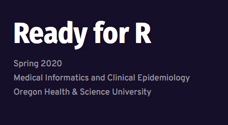

Course Description
This course is meant to be a gentle introduction to using R/Rstudio in your daily work. It aims to teach useful skills (visualization, data loading, data filtering and manipulation, simple statistics) that students can immediately use in their work. No prerequisites or previous experience required.
It is not meant to be a substitute for a full programming course or a full course in statistics. In the end, students will apply these skills to a final project.
Learning Objectives
- Understand and utilize R/RStudio.
- Understand basic data types and data structures in R.
- Familiarize and load data files (Excel, Comma Separated Value files) into R/Rstudio, with tips on formatting.
- Visualize datasets using ggplot2 and understand how to build basic plots using ggplot2 syntax.
- Filter and format data in R for use with various routines.
- Execute and Interpret some basic statistics in R.
Course Links
Course Website Course Syllabus Course Mailing List
Sign up for the course at: https://ready4r.netlify.com/mailing/
Citation
BibTeX citation:
@online{laderas2020,
author = {Ted Laderas and Ted Laderas and Aaron Coyner},
title = {Ready for {R}},
date = {2020-03-20},
url = {https://laderast.github.io//edu/2021-03-20-ready-for-r},
langid = {en}
}
For attribution, please cite this work as:
Ted Laderas, Ted Laderas, and Aaron Coyner. 2020. “Ready for
R.” March 20, 2020. https://laderast.github.io//edu/2021-03-20-ready-for-r.